فصل نهم — مورفولوژی ریاضی دودویی: از چهار عمل ساده تا کاربرد واقعی#
منبع ساختاری: فصل نهم کتاب Digital Image Processing، ویرایش چهارم، نوشتهٔ Gonzalez و Woods؛ با تمرکز دقیق بر مقدمات و چهار عمل دودویی Erosion، Dilation، Opening و Closing در بخشهای 9.1 تا 9.3. مطالب دیگر فصل اصلی کتاب ــ مانند تبدیل Hit-or-Miss، اسکلتسازی، نازکسازی، بازسازی مورفولوژیک و مورفولوژی خاکستری ــ آگاهانه خارج از محدودهٔ درخواستی این جزوهاند.
فرض کنید سامانهای با دوربین یا یک مدل یادگیری ماشین از تصویر خیابان، ماسک دودویی خرابیهای سطح آسفالت را استخراج کرده است. معمولاً نتیجه بینقص نیست: نقطههای سفید بیربط دیده میشوند، درون نواحی خرابی حفرههای سیاه وجود دارد و گاهی بخشهایی که نباید به هم وصل باشند، با یک پل نازک متصلاند. آیا میشود فقط با دانستن شکل این نواحی ــ نه رنگ، نه بافت و نه میزان روشنایی ــ بخشی از خطاها را اصلاح کرد؟ چهار ابزار این فصل دقیقاً برای همین نوع سؤال ساخته شدهاند.

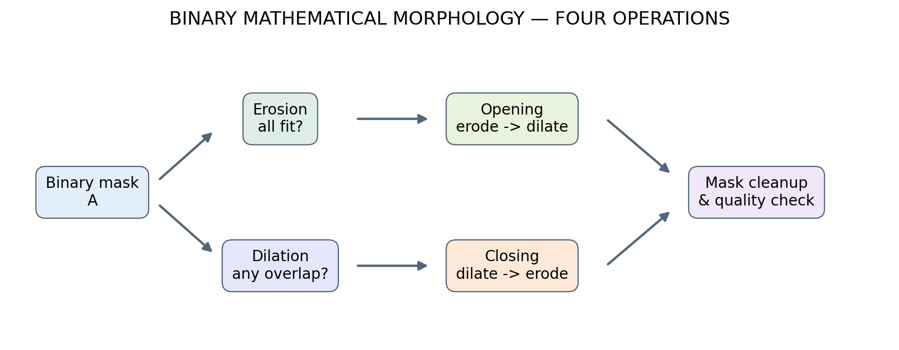
Fig. 305 نقشهٔ مفهومی فصل: یک ماسک دودویی با دو عمل اولیه بررسی میشود و از ترکیب ترتیبی آنها دو عمل ساختاری بهدست میآید. در کاربرد واقعی باید اثر عملیات روی شکل و صحت ماسک سنجیده شود.#
اهداف یادگیری#
پس از مطالعه، دانشجو باید بتواند توضیح دهد چرا مورفولوژی به شکل جسم حساس است، عنصر ساختاری را با مبدأ مشخص تعریف کند، هر چهار عمل را روی آرایهٔ صفر و یک دستی محاسبه کند، روابط مجموعهای و قوانین اصلی را به زبان روشن تفسیر کند، اثر اندازه و جهت عنصر ساختاری و رفتار مرز تصویر را بسنجد، در Python ماسکها را پردازش کند و برای پاکسازی ماسک قطعهبندی تصمیمی مستند و قابل آزمایش بگیرد.
9.1 — مبانی و زبان مجموعهها#
9.1.1 چرا مورفولوژی با فیلتر مکانی عادی فرق دارد؟#
در فصل سوم فیلتر میانگین به عدد پیکسلهای همسایه نگاه میکرد و میانگین میگرفت. فیلتر گوسی هم ترکیبی وزندار از شدتها میساخت. اما در مورفولوژی دودویی، مسئله این نیست که شدت متوسط چقدر است؛ پرسش این است که آیا یک شکل کوچک کاملاً روی جسم جا میشود، یا حتی بخشی از آن با جسم تماس پیدا میکند؟
برای مثال، ناحیهای سفید با یک زائدهٔ باریک را در نظر بگیرید. مقدار سفید در همه جا دقیقاً یکسان است؛ ولی اگر یک دیسک کوچک را روی زائده بگذاریم، کاملاً در آن جا نمیشود. همین مشاهده کافی است تا بتوانیم زائده را از بدنهٔ ضخیم تفکیک کنیم. چنین رفتاری به هندسه وابسته است، نه به جمع و میانگین اعداد.
یک تصویر دودویی را تابع زیر در نظر میگیریم:
در این رابطه، \(\Omega\) شبکهٔ مختصات محدود تصویر، \(r\) شمارهٔ سطر، \(c\) شمارهٔ ستون و \(A\) مجموعهٔ تمام نقاط پیشزمینه است. ما قرارداد میکنیم یک/سفید = موضوع مورد علاقه و صفر/سیاه = پسزمینه. این قرارداد را تا انتهای فصل تغییر نمیدهیم. اگر شیء در تصویر واقعی سیاه باشد، ابتدا باید ماسک را وارونه یا آستانهگذاری متناسب انتخاب کرد؛ وگرنه عمل روی پسزمینه انجام میشود.

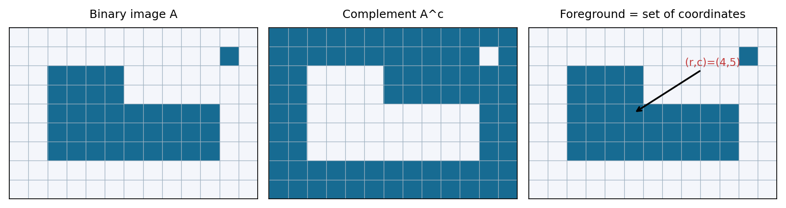
Fig. 306 همان تصویر دودویی را میتوان هم آرایهای از صفر و یک و هم مجموعهای از مختصات پیکسلهای سفید دید. تصویر وسط مکمل مجموعه است؛ در نتیجه «شیء» و «پسزمینه» با تغییر قرارداد جای یکدیگر را میگیرند.#
مثال عددی. اگر \(A=\{(1,1),(1,2),(2,1),(2,2)\}\) باشد، تصویر حاوی یک بلوک \(2\times2\) سفید است؛ اما از دید مجموعه، صرفاً چهار زوج مرتب داریم. این نگاه برای تعریف عملهای بعدی کافی است. ترتیب سطر و ستون باید در پیادهسازی روشن باشد؛ numpy به شکل image[row, column] دسترسی میدهد.
9.1.2 عنصر ساختاری چیست؟#
عنصر ساختاری یا Structuring Element را با \(B\) نشان میدهیم. \(B\) نیز یک مجموعهٔ کوچک از مختصات نسبی است که نقش قالب آزمایش را دارد. نمونههای معمول آن مربع، دیسک، لوزی، صلیب و خط افقی هستند. به شکل کوچک آن در Python گاهی footprint میگویند.
برای یک صلیب \(3\times3\) با مبدأ در مرکز داریم:
در نمایش شبکهای:
مربع \(3\times3\) هر ۹ مکان را در بر میگیرد، در حالی که صلیب تنها ۵ مکان را بررسی میکند. صفرهای بیرون صلیب در تعریف چهار عمل این جزوه «جزء عنصر ساختاری نیستند»؛ شرطِ تطبیق با پسزمینه هم به شمار نمیآیند. این تفاوت در کدنویسی بسیار مهم است.

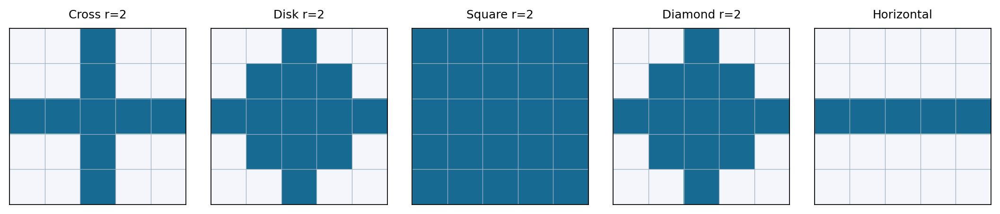
Fig. 307 پنج عنصر ساختاری نمونه با شعاع اسمی یکسان. شکل، جهت و تعداد نقاط فعال آنها متفاوت است؛ پس نتیجهٔ پردازش نیز الزاماً یکسان نخواهد بود. سلولهای آبی نقاط عضو \(B\) هستند.#
9.1.3 مبدأ، انتقال و بازتاب#
وقتی عنصر ساختاری را روی تصویر حرکت میدهیم باید معلوم باشد «نقطهٔ مرکزی» کجاست. اگر \(z=(z_r,z_c)\) جابهجایی باشد، انتقال عنصر چنین است:
و بازتاب نسبت به مبدأ چنین تعریف میشود:
چرا بازتاب مهم است؟ در تعریف مجموعهای اتساع، بازتاب نقش دارد؛ شبیه احتیاطی که در کانولوشن نسبت به چرخاندن هسته داشتیم. اگر \(B\) یک دیسک یا مربع متقارنِ مرکزی باشد، \(\widehat B=B\) و اختلافی دیده نمیشود. اما برای عنصر نامتقارن، نتیجهٔ استفاده از \(B\) و بازتابش میتواند متفاوت باشد. برای همین در تمرینهای اصلی ما ابتدا از عناصر متقارن استفاده میکنیم.
9.1.4 قاعدهٔ نگاهکردن به عنصر ساختاری#
دو سؤال را همیشه به خاطر بسپارید: (۱) آیا همهٔ خانههای فعال \(B\) روی پیکسلهای سفید قرار گرفتهاند؟ (۲) آیا دستکم یکی از خانههای فعال \(B\) با سفیدی تماس دارد؟ پاسخ سؤال اول به فرسایش و سؤال دوم به اتساع مربوط است.

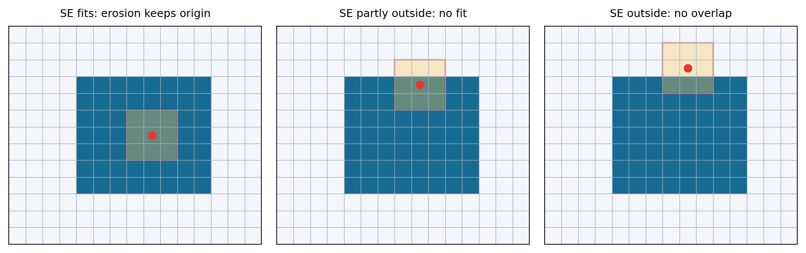
Fig. 308 مربع زرد جایگاه آزمایش عنصر ساختاری و نقطهٔ قرمز مبدأ آن است. فرسایش فقط در موقعیتهایی خروجی ۱ میدهد که تمام قالب درون شیء جا شود.#
9.1.5 فاصله، مقیاس و پیوستگی#
در شبکهٔ دیجیتال، قطر دیسک کوچک \(2r+1\) پیکسل است؛ اما تعداد پیکسلهای آن دقیقاً برابر مساحت دیسک پیوسته نیست. «دیسک با شعاع ۳» روی شبکهٔ گسسته شکل پلهپله دارد. اگر تصویر در ابعاد دیگری نمونهبرداری شود، همان شعاعِ پیکسلی معنای فیزیکی دیگری خواهد داشت. مثلاً اگر هر پیکسل ۲ میلیمتر باشد، شعاع ۳ پیکسل معادل ۶ میلیمتر است؛ و اگر هر پیکسل ۲۰ میلیمتر باشد، معادل ۶ سانتیمتر است. پس اندازهٔ \(B\) باید متناسب با مقیاس مسئله انتخاب شود.
مفهوم همسایگی ۴تایی و ۸تایی که در فصل دوم خواندیم، در تحلیل جدا یا متصل بودن شکلها کاربرد دارد؛ ولی صرفاً دانستن همسایگی کافی نیست: عنصر ساختاری میتواند خطی، صلیبی، دایرهای یا جهتدار باشد و از همسایگی فراتر رود.
9.2 — فرسایش (Erosion)#
9.2.1 تعریف و تفسیر#
فرسایشِ مجموعهٔ \(A\) بهوسیلهٔ عنصر ساختاری \(B\) را \(A\ominus B\) مینویسیم:
ترجمهٔ کلامی فرمول: «تمام مکانهایی را پیدا کن که اگر مرکز \(B\) را آنجا قرار دهیم، تمام قسمتهای فعال عنصر ساختاری داخل جسم سفید قرار بگیرند.» این مکانها پیشزمینهٔ تصویر خروجیاند.
تعریف معادل را با مکمل \(A^c\) نیز میتوان نوشت:
یعنی عنصر ساختاری نباید به هیچ نقطهٔ پسزمینه برخورد کند. فرسایش معمولاً جسم را کوچک میکند، زائدههای نازک را میزداید و اتصالهای باریک را از میان میبرد. دقت کنید کلمهٔ «معمولاً» به هندسه و انتخاب مبدأ وابسته است؛ در مثالهای ما \(0\in B\) برقرار است و در نتیجه \(A\ominus B\subseteq A\).
9.2.2 محاسبهٔ دستی با ماتریس کوچک#
فرض کنید \(B\) همان صلیب \(3\times3\) و پنج خانهٔ فعال آن باشند. برای اینکه پیکسل مرکزی خروجی برابر ۱ شود، باید خود مرکز و چهار همسایهٔ بالا، پایین، چپ و راست در ورودی سفید باشند. اگر حتی یکی از آن پنج خانه صفر باشد، نتیجه صفر است. هیچ میانگینگیری یا ضریب وزنی در کار نیست.
برای هر مکان \((r,c)\) در تصویر دودویی، وقتی عنصر ساختاری صلیبی و متقارن است میتوان نوشت:
علامت \(\land\) عمل منطقی AND است. اگر همهٔ جملات برابر ۱ باشند خروجی ۱ است؛ در غیراینصورت صفر.

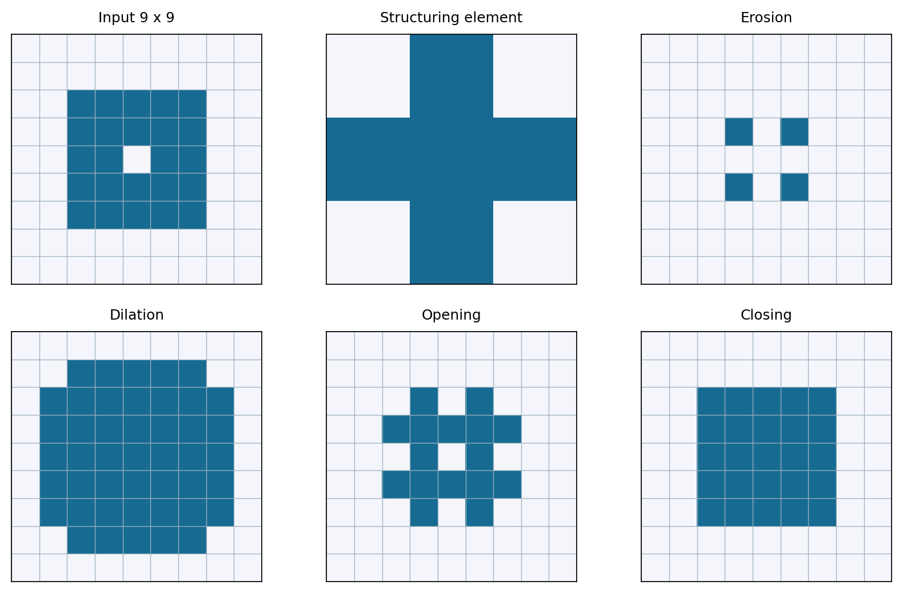
Fig. 309 مقایسهٔ شش نقشهٔ کوچک با عنصر صلیبی: از ورودی و عنصر ساختاری تا فرسایش، اتساع و نتایج دو ترکیب. بهخصوص اثر حفرهٔ سیاهِ مرکز را دنبال کنید.#
تمرین عددی کوتاه: اگر همسایگی صلیبیِ یک پیکسل \([1,1,1,0,1]\) باشد، خروجی فرسایش صفر است، چون عنصر در آن مکان بهطور کامل داخل جسم نیست. اگر بهجای آن \([1,1,1,1,1]\) باشد، خروجی یک میشود.
9.2.3 چه کاربردی دارد؟#
در کنترل کیفیت تصویری، یک زائدهٔ بسیار نازک از بدنهٔ شیء با یک فرسایش مناسب از بین میرود. در تحلیل ماسکِ قطعهبندی نیز با فرسایش میتوان ناحیهٔ داخلیتر و مطمئنتر جسم را مشخص کرد. ولی فرسایش تنها، اندازهٔ واقعی ناحیه را کوچکتر گزارش میکند و ممکن است شیء کوچک را کلاً حذف کند؛ بنابراین نباید آن را بهتنهایی برای تخمین مساحت واقعی استفاده کرد.
9.3 — اتساع (Dilation)#
9.3.1 تعریف مجموعهای#
اتساع مجموعهٔ \(A\) با \(B\) را بهصورت زیر تعریف میکنیم:
به زبان ساده، هرجا حتی بخشی از عنصر ساختاری با پیشزمینه تماس پیدا کند، مرکز آن در خروجی سفید میشود. شکل معادل و گاهی شهودیتر رابطه این است:
پس اتساع را میتوان «قرار دادن یک نسخه از \(B\) در هر پیکسل سفید و گرفتن اجتماع شکلهای حاصل» تصور کرد. برای عنصر متقارنِ مبدأدار، \(A\subseteq A\oplus B\).
9.3.2 محاسبهٔ منطقی در یک همسایگی#
برای صلیب متقارن \(3\times3\)، فرمول خروجی در پیکسل \((r,c)\) چنین است:
در اینجا \(\lor\) همان OR است؛ با وجود حتی یک ۱ در همسایگی، خروجی ۱ خواهد شد. به همین دلیل، اتساع شکافهای کوتاه را کمتر میکند، اجسام را کلفتتر نشان میدهد و گاهی دو جسم نزدیک را به هم متصل میکند.
محاسبهٔ نمونه: برای ورودی همسایگی \([0,0,1,0,0]\)، اتساع در مرکز ۱ میدهد؛ فرسایش برای همان همسایگی ۰ میدهد. این تنها یک مثال است؛ کافی است هر دو پرسش «همه؟» و «دستکم یکی؟» را از خود بپرسید.

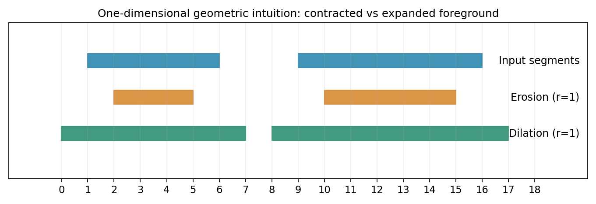
Fig. 310 شهود هندسی در یک بعد: فرسایش انتهای قطعهها را به داخل میبرد و اتساع آنها را به بیرون. نسخهٔ دوبعدی همان منطق را روی مرز شکل اجرا میکند.#
9.3.3 اتساع چه چیزهایی را خراب میکند؟#
اگر دو شیء فقط یک یا دو پیکسل فاصله داشته باشند، یک اتساعِ نسبتاً بزرگ ممکن است آنها را یکی کند. از سوی دیگر اندازهگیری مساحت روی ماسک اتساعیافته بهصورت سیستماتیک بیشتر از مقدار ماسک اصلی میشود. در نتیجه اتساع یک ابزار هندسی و هدفمند است، نه یک بهبود خودکارِ همهجانبه.

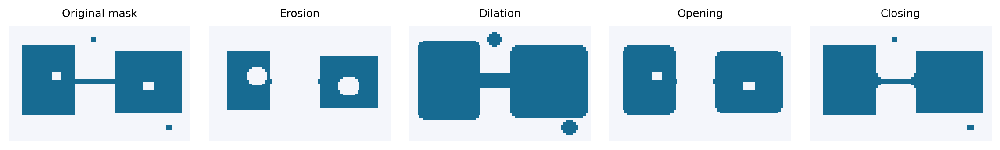
Fig. 311 اثر چهار عمل روی شکلی دارای پل، نقطهٔ کوچک و حفره. به تفاوت فرسایش و اتساع با گشودن و بستن توجه کنید: دو ترکیب اخیر برای اصلاح نوع مشخصی از نقص بهکار میروند.#
9.3.4 مقایسهٔ فوری دو عمل اولیه#
پرسش |
فرسایش \(\ominus\) |
اتساع \(\oplus\) |
|---|---|---|
آزمون عنصر ساختاری |
همهٔ نقاط فعال داخل جسم باشند |
دستکم یک نقطهٔ فعال با جسم تماس داشته باشد |
معادل منطقی برای \(B\) متقارن |
|
|
اثر معمول بر مرز سفید |
حرکت به داخل |
حرکت به بیرون |
اثر بر نویز سفیدِ کوچک |
احتمال حذف |
احتمال بزرگشدن |
اثر بر حفرهٔ سیاهِ کوچک |
بزرگشدن |
احتمال کوچکشدن |
خطر رایج |
از دست رفتن بخش باریک یا شیء کوچک |
ادغام دو شیء مستقل |
9.4 — گشودن (Opening)#
9.4.1 چرا یک فرسایش بهتنهایی کافی نیست؟#
اگر نویز سفید را با فرسایش حذف کنیم، ممکن است جسم سالم نیز کوچک شود. پس از حذف نقاط خیلی باریک، میخواهیم بخشهای ضخیم و باقیمانده را تقریباً به اندازهٔ قبلی برگردانیم. راهحل این است که ابتدا فرسایش و سپس اتساع با همان عنصر ساختاری اجرا کنیم. به این دو مرحله «گشودن» میگویند:
گشودن معمولاً نقطههای سفید کوچک، زائدههای سفید باریک و پلهایی را که عنصر ساختاری در آنها جا نمیشود حذف میکند، ولی اندازهٔ بخش ضخیم جسم را تا حدی بازمیگرداند. نکتهٔ بسیار مهم این است که اتساع دوم قادر نیست ناحیهای را که در فرسایش کاملاً محو شده زنده کند. به همین دلیل یک پل باریک ممکن است برای همیشه قطع شود.
9.4.2 تفسیر هندسی: یک دیسک درون جسم حرکت میکند#
فرض کنید یک دیسک کوچک درون ناحیهٔ سفید حرکت میکند، بدون آنکه حتی بخشی از آن به بیرون جسم برود. اجتماع تمام جاهایی که این دیسک میتواند اشغال کند، نتیجهٔ گشودن است:
این فرمول فقط تعریف دیگری نیست؛ نشان میدهد چرا هیچ نقطهای خارج از مجموعهٔ اولیه به گشودن اضافه نمیشود. تمام دیسکهای اجتماع از ابتدا درون \(A\) بودهاند.

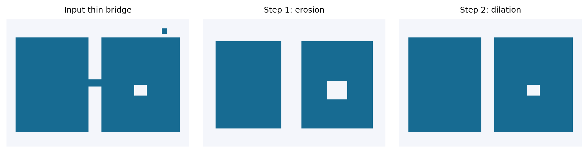
Fig. 312 گشودن مرحلهبهمرحله: ابتدا پل باریک و ذرهٔ کوچک در فرسایش حذف میشوند؛ سپس با اتساع بخشهای اصلی دوباره گسترش مییابند. پل حذفشده بازنمیگردد.#
9.4.3 گشودن و حفظ اجسام کوچک#
گاهی شیء اصلی خود بسیار کوچک است و تنها ۳ یا ۴ پیکسل پهنا دارد. اگر دیسک ساختاری شعاع ۵ پیکسل انتخاب کنیم، همان شیء معتبر هم حذف میشود. پس جملهٔ «گشودن برای حذف نویز خوب است» یک شرط پنهان دارد: اجسام مورد نظر باید از نویز بزرگتر یا ضخیمتر باشند تا با یک \(B\) مناسب قابل تفکیک باشند. اگر اندازهٔ نویز و شیء تقریباً یکسان باشد، چهار عمل این فصل نمیتوانند بهتنهایی بین آنها تفاوت معنایی قائل شوند.
9.5 — بستن (Closing)#
9.5.1 مسئلهٔ حفره و شکاف سیاه#
این بار ماسک یک جسم نسبتاً ضخیم دارد، ولی درون آن چند نقطهٔ سیاهِ اشتباه دیده میشود یا مرز جسم، بریدگی باریکی دارد. اتساع، این حفرهها و شکافها را کوچک میکند، اما کل جسم را هم بزرگ میکند. بنابراین پس از اتساع، یک فرسایش با همان عنصر ساختاری انجام میدهیم:
به این عملیات بستن میگویند. بستن معمولاً حفرهها و شکافهای کوچکِ تیره درون زمینهٔ روشن را پر و دو بخش سفید نزدیک را به یکدیگر متصل میکند. فرسایش دوم ضخامت اضافهشدهٔ بسیاری از مرزهای بیرونی را بازمیگرداند، ولی لزوماً هندسه را کاملاً به شکل نخست برنمیگرداند؛ وگرنه هیچ حفرهای پر نمیشد!

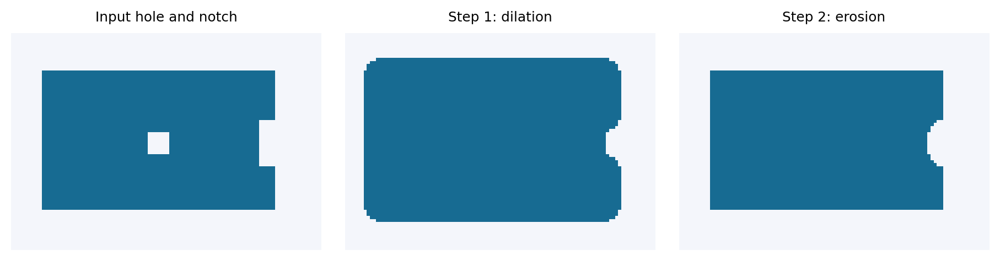
Fig. 313 بستن مرحلهبهمرحله: در اتساع، حفره و تورفتگی باریک کوچک میشوند؛ فرسایش بعدی بخش زیادی از گسترش بیرونی را پس میگیرد. تفاوت بین «پرکردن حفرهٔ کوچک» و «پرکردن هر حفره با هر اندازه» را فراموش نکنید.#
9.5.2 تشبیه هندسی با فضای بیرون جسم#
اگر در گشودن، دیسک را داخل جسم میغلتاندیم، در بستن میتوان از حرکت دیسک در فضای بیرون استفاده کرد: هر شیار تیرهای که دیسک نتواند به آن وارد شود، ممکن است بهوسیلهٔ بستن پُر شود. این تشبیه برای فهم اینکه چرا بستن حفرههای کوچکتر از عنصر ساختاری را هدف میگیرد بسیار مفید است؛ اما برای شکلهای نامنظم و مرزهای متصل به لبهٔ تصویر، باید شرایط دقیق مجموعهای را بررسی کرد.
9.5.3 کدام ترتیب؟#
گشودن و بستن جابهجاپذیر نیستند:
اگر ابتدا Opening کنیم، نقطههای سفید و پلهای باریک حذف میشوند و سپس Closing حفرههای کوچک را ترمیم میکند. اگر ترتیب را برعکس کنیم، ممکن است Closing ابتدا دو شیء را به هم متصل کند و Opening بعدی نتواند آن اتصال را حذف کند. ترتیب را باید از نوع خطایی که میخواهیم اصلاح کنیم و از نتیجهٔ آزمایش روی داده تعیین کنیم.

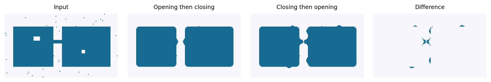
Fig. 314 مقایسهٔ دو ترتیب روی یک تصویر مصنوعی؛ پنل آخر پیکسلهایی را نشان میدهد که با تغییر ترتیب متفاوت شدهاند. دو دستور ظاهراً مشابه الزاماً همارز نیستند.#
9.6 — خواص ریاضی چهار عمل: چرا روابط واقعاً مفیدند؟#
در این بخش تنها به فرمولنویسی اکتفا نمیکنیم؛ هر خاصیت را به یک تصمیم عملی در پردازش تصویر وصل میکنیم. در همهٔ روابط فرض میکنیم مجموعهها روی شبکهٔ کامل \(\mathbb Z^2\) تعریف شدهاند، \(B\) محدود و ناتهی است و وقتی دربارهٔ کوچککردن و بزرگکردن صحبت میکنیم، مبدأ \(0\in B\) باشد. تصاویر رایانهای مرز محدود دارند؛ اثر این محدودیت را جداگانه بررسی خواهیم کرد.
9.6.1 خاصیت شمول (Monotonicity)#
اگر \(A\subseteq C\) باشد، یعنی همهٔ پیکسلهای سفید \(A\) در \(C\) نیز سفیدند، آنگاه:
چرا؟ اگر قالب \(B\) داخل \(A\) جا شود، حتماً داخل مجموعهٔ بزرگتر \(C\) هم جا میشود؛ و اگر \(B\) با \(A\) تماس داشته باشد، با مجموعهٔ بزرگتر هم تماس دارد. این نتیجه در تحلیل اثر اصلاح ماسکها مفید است: با بزرگشدن مجموعهٔ ورودی، خروجی هیچکدام از این دو عمل نباید در معنای مجموعهای «برعکس» کوچک شود.
همین اصل برای گشودن و بستن نیز برقرار است:
9.6.2 گشودن ضدگسترنده و بستن گسترنده است#
این رابطه یکی از مهمترین آزمونهای صحت پیادهسازی است. وقتی همان عنصر ساختاری و قرارداد مرزی استاندارد را استفاده میکنیم، گشودن نمیتواند پیکسل سفید تازهای در خارج از ناحیهٔ اولیه بسازد، و بستن نباید بخشی از سفیدی اولیه را حذف کند. اگر خلاف این را در شبیهسازی دیدیم، ابتدا باید قرارداد مرز، نوع داده و مبدأ عنصر ساختاری را بررسی کنیم.
استدلال گشودن: نتیجهٔ رابطهٔ (9-8) اجتماع نسخههایی از \(B\) است که همگی کاملاً در \(A\) جا میشدند؛ پس اجتماع آنها نیز زیرمجموعهٔ \(A\) است. استدلال بستن: از دوگانگی گشودن و بستن نسبت به مکمل که در ادامه میآید نتیجه میشود؛ یا میتوان آن را مستقیم از تعریف مجموعهای استخراج کرد.
9.6.3 یک بار گشودن/بستن برای عنصر ثابت کافی است: ایدمپوتنت بودن#
این خاصیت را idempotence مینامند. تصور کنید با یک دیسکِ ثابت، تمام برجستگیهایی که دیسک در آنها جا نمیشود از بین رفتهاند. اجرای دوبارهٔ همان عملیات چیزی برای حذفکردن باقی نمیگذارد. مشابه آن، بستن دوباره با همان قالب نباید حفرهٔ تازهای را پر کند.
نکتهٔ عملی: اگر بار دوم خروجی شما عوض شد، احتمال دارد هر بار خروجی به نوع دیگری تبدیل یا اندازهٔ عنصر ساختاری تغییر داده شده باشد، یا رفتار مرز تصویرِ محدود با تعریف ایدهآل مجموعهای فرق کند.

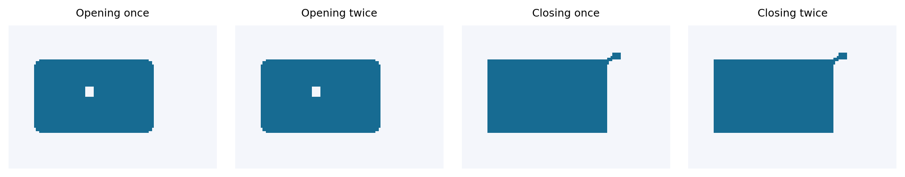
Fig. 315 یک بار و دو بار گشودن یا بستن با عنصر ساختاری ثابت. بخشهای اصلی تصویر باید یکسان بمانند؛ این آزمایش برای کنترل کد مفید است.#
9.6.4 دوگانگی میان فرسایش و اتساع#
برای \(A^c\) بهعنوان مجموعهٔ پسزمینه، و \(\widehat B\) بهعنوان بازتاب قالب، داریم:
به زبان فارسی: «نقاطی که بعد از فرسایش سفید نماندهاند» همان نقاطی هستند که اگر پسزمینه را با قالب بازتابیافته اتساع دهیم سفید میشوند. در واقع، فرسایش شیء از یک سمت، به اتساع پسزمینه از سمت مکمل مربوط است.
اثبات کوتاه رابطهٔ اول:
عبارت آخر دقیقاً از تعریف اتساع و بازتاب عنصر ساختاری بهدست میآید. پس دو طرف مجموعهٔ یکسانی از مختصات را مشخص میکنند. برای عنصر مرکزیمتقارن \(\widehat B=B\) و رابطه سادهتر میشود.

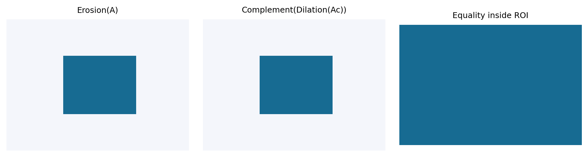
Fig. 316 مقایسهٔ فرسایش مستقیم با مکمل اتساعِ مکمل. در ناحیهٔ داخلی تصویر توافق مشاهده میشود؛ در اطراف مرز فیزیکی آرایه باید به سیاست padding دقت کرد.#
برای دو عمل ترکیبی هم دوگانگی برقرار است:
این روابط کمک میکنند بفهمیم چرا گشودن لکههای سفید و بستن لکههای سیاه به هم نزدیکاند: یکی را میتوان با وارونهکردن پیشزمینه و پسزمینه به دیگری تبدیل کرد.
9.6.5 اثر اندازه و جهت عنصر ساختاری#
اگر \(B_1\subseteq B_2\)، آنگاه:
یعنی قالب بزرگتر شرطِ فرسایش را سختتر و دامنهٔ اتساع را گستردهتر میکند. اما برای انتخاب میان دو قالبِ دارای شکل متفاوت، صرفاً مقایسهٔ شعاع کافی نیست: یک خط افقی بلند روی ترک افقی رفتاری متفاوت از یک دیسک دارد. همچنین نباید این قانون را بدون فرض لازم، به شکل نادرست به نتیجهٔ دو ترکیب گشودن و بستن تعمیم دهیم؛ خود آزمایش تصویری معیار بهتری است.

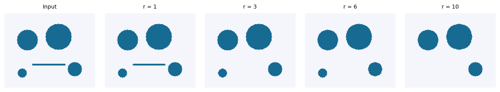
Fig. 317 گشودن یک ماسک ثابت با دیسکهای دارای شعاع متفاوت. پدیدهای که در یک مقیاس «نویز» تلقی میشود، در مقیاس بزرگتر ممکن است دیگر از یک شیء واقعی قابل تفکیک نباشد.#

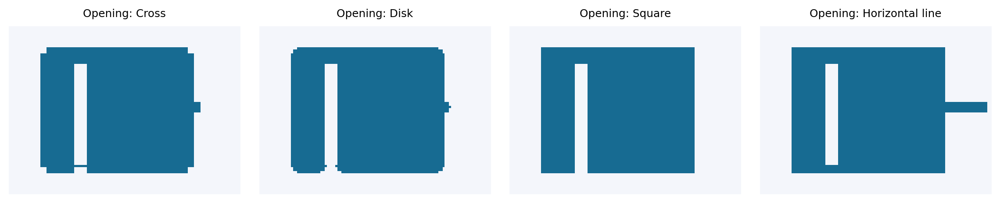
Fig. 318 تأثیر انتخاب صلیب، دیسک، مربع و خط افقی بر نتیجهٔ گشودن. عنصر ساختاری جهتدار میتواند اتصالهای همسو با جهت خود را بهتر حفظ کند، ولی در جهت دیگر باعث حذف ساختار شود.#
9.6.6 مقایسهٔ پارامترها از راه اندازهٔ ماسک#
اگر \(|A|\) تعداد پیکسلهای سفیدِ ماسک باشد، برای عنصر دارای مبدأ:
و در چارچوب تعریف ایدهآل:
این روابط بهتنهایی نمیگویند کدام خروجی صحیحتر است. فرض کنید یک حفرهٔ سیاه واقعی در آسفالت وجود دارد: بستن ممکن است آن را حذف کند و مساحت را زیادتر نمایش دهد؛ اما اگر حفره فقط یک خطای ماسک بوده، همان تغییر مفید است. در نتیجه درستیِ هندسی باید در برابر تعریف مسئله یا دادهٔ مرجع بررسی شود، نه صرفاً تعداد پیکسل سفید.

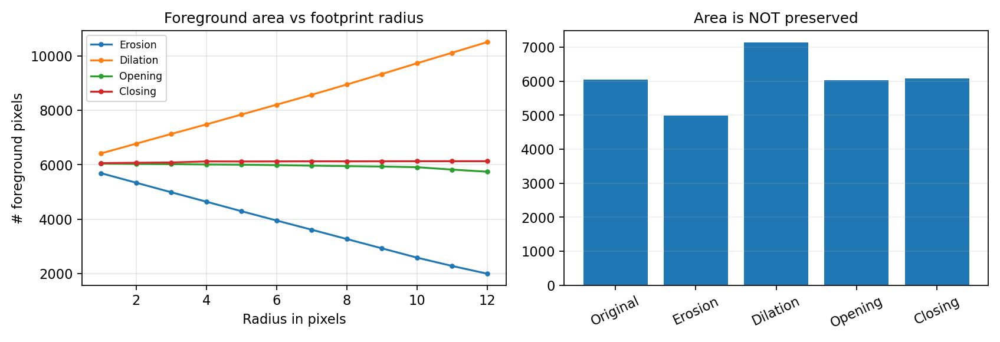
Fig. 319 آزمایش عددی: تغییر مساحت ماسک با شعاع عنصر ساختاری. تفاوت مقدار مساحت با کیفیت تشخیص باید تفکیک شود.#
9.7 — جزئیات اجرا که اگر ندانیم، روابط درست هم خروجی غلط میدهند#
9.7.1 مرز تصویر و Padding#
در کتاب، تعریفها روی مجموعههای دوبعدی بیان میشوند؛ اما فایل تصویر، یک مستطیل محدود است. وقتی عنصر ساختاری به لبهٔ تصویر میرسد، چند خانهٔ آن خارج از آرایه قرار میگیرند. برنامه باید تصمیم بگیرد خارج آرایه چه مقدار محسوب شود. چند قرارداد رایج وجود دارد: صفر فرضکردن، یک فرضکردن، بازتاب مقادیر داخل، نادیدهگرفتن اثر نقاط بیرونی، یا پیش از محاسبه بزرگکردن بوم تصویر با یک حاشیه.
در کد مستقل این فصل برای شفافیت از scipy.ndimage با border_value=0 استفاده میکنیم و نمونههای عملی را با حاشیهٔ امن میسازیم. اما اگر جسمی تا مرز تصویر امتداد داشته باشد، همین انتخاب میتواند باعث شود بستنِ محدود روی آرایه کاملاً گسترنده نباشد؛ زیرا اتساع بیرون از قاب بریده میشود و فرسایش بعدی آن قسمت را از دست میدهد.
راهحل آزمایشگاهی برای اشیای نزدیک لبه: ابتدا به اندازهٔ کافی تصویر را با پسزمینهٔ معلوم بزرگ کنید، زنجیرهٔ عملیات را روی آرایهٔ بزرگتر انجام دهید، سپس به اندازهٔ اصلی برش دهید. اگر داده در واقع بخشی از یک شیء ادامهدار بیرون قاب باشد، باز هم باید قرارداد فیزیکی مناسب را مشخص کنیم.

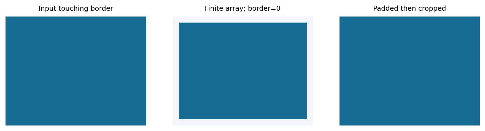
Fig. 320 یک تصویر تمامسفید که به مرز قاب رسیده است. بستن با border_value=0 روی آرایهٔ محدود ممکن است مرز را از دست بدهد؛ با حاشیهگذاری مناسب نتیجه فرق میکند.#
9.7.2 سه خطای بسیار رایج#
اول: تصویری با شدتهای ۰ تا ۲۵۵ را مستقیماً بهجای تصویر بولی به عملیات دودویی دادن. در این حالت مقادیر غیرصفر به پیشزمینه تبدیل میشوند؛ حتی یک خاکستری بسیار تیره هم ممکن است «۱» تلقی شود. باید ابتدا ماسک را با آستانهای مناسب به bool تبدیل کنیم. دوم: انتخاب اندازهٔ فرد/زوج و محل مبدأ عنصر بدون توجه به سیاست کتابخانه. بهتر است برای مثالهای ابتدایی، عناصر فرداندازه با مرکز مشخص انتخاب شوند. سوم: استفاده از عنصر نامتقارن بدون توجه به بازتاب؛ بهخصوص اگر از دو کتابخانهٔ متفاوت استفاده میکنیم. در این جزوه محاسبات اصلی با دیسک، مربع و صلیبِ متقارن انجام میشوند.
9.7.3 آیا چهار عمل خطیاند؟#
خیر. اینها عملیات مجموعهای/منطقیاند، نه میانگینگیری یا کانولوشن خطی معمول. به طور کلی نمیتوان قانون جمع و ضریب را مثل یک سیستم خطی بر آنها اعمال کرد. در تصویر دودویی، رابطهٔ زیر فقط وقتی عنصر \(B\) متقارن فرض شده باشد، به شکل سادهٔ min و max در همسایگی ظاهر میشود:
برای عناصر متقارن، علامت \(+\) و \(-\) در آرگومان صرفاً بازتابی از مختصات است و نتیجهٔ مجموعهای یکی میشود؛ اما برای قالب نامتقارن این نکته را نمیتوان نادیده گرفت. مهمتر اینکه این min/max فقط روش نوشتن منطق صفر/یک است و نباید از آن نتیجه گرفت که موضوع این فصل مورفولوژی تصاویر خاکستری است.

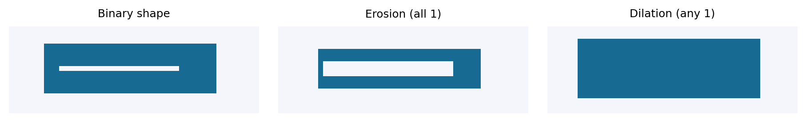
Fig. 321 مقایسهٔ هندسی: بدون آنکه روشنایی یا میانگین شدت مطرح باشد، فقط عضویت/عدمعضویت پیکسل در مجموعه تغییر میکند.#
9.7.4 تصمیمگیری دربارهٔ شعاع، شکل و ترتیب#
برای انتخاب \(B\) از این منطق استفاده کنید: نخست عرض تقریبی کوچکترین شیء معتبر و بزرگترین نویزی که میخواهید حذف کنید را در واحد پیکسل تعیین کنید. سپس قالبی انتخاب کنید که در شیء معتبر جا شود ولی در نویز نجا شود. اگر یک خط باریک واقعاً بخشی از شیء است، نباید آن را بیدلیل با یک دیسک بزرگ حذف کنید. اگر حفره واقعاً اطلاعات معناداری دارد، بستن آن خطا است. در عمل، شعاع ۱، ۲، ۳ و … را روی مجموعهای از تصاویر اعتبارسنجی امتحان کنید؛ انتخاب عدد ثابت از روی یک تصویر زیبا کافی نیست.
9.8 — آزمایشگاه Python: چهار تابع مستقل و کاملاً روشن#
همهٔ توابع زیر بر آرایههای bool و عناصر ساختاری متقارن کار میکنند. فرسایش و اتساع پایهٔ دو تابع دیگرند؛ این همان رابطهٔ ریاضی بخشهای پیشین است.
import numpy as np
from scipy import ndimage as ndi
# Disk-like 5x5 footprint, centered at (2, 2)
y, x = np.mgrid[-2:3, -2:3]
B = (x*x + y*y <= 4)
def erosion(mask, B):
return ndi.binary_erosion(mask.astype(bool), structure=B, border_value=0)
def dilation(mask, B):
return ndi.binary_dilation(mask.astype(bool), structure=B, border_value=0)
def opening(mask, B):
return dilation(erosion(mask, B), B)
def closing(mask, B):
return erosion(dilation(mask, B), B)
اگر mask تصویر دودویی نباشد، ابتدا باید آن را به صورت مناسب بسازیم. بهعنوان مثال mask = gray < 90 برای جستوجوی نواحی تیرهتر از آستانهٔ ۹۰ استفاده میشود. برعکس gray > 200 نواحی روشن را انتخاب میکند. خود عمل آستانهگذاری در اینجا یک مرحلهٔ آمادهسازی داده است، نه پنجمین عمل مورفولوژیک.
مثال کدنویسی کوچک:
A = np.zeros((9, 9), dtype=bool)
A[2:7, 2:7] = True
A[4, 4] = False # tiny dark hole
print('input area:', int(A.sum()))
print('eroded area:', int(erosion(A, B).sum()))
print('dilated area:', int(dilation(A, B).sum()))
print('opening area:', int(opening(A, B).sum()))
print('closing area:', int(closing(A, B).sum()))
در این مثال دو سؤال را بررسی کنید: آیا فرسایش ابعاد ناحیهٔ سفید را کم کرده است؟ آیا بستن حفرهٔ مرکزی را ترمیم کرده است؟ پاسخ به هندسهٔ \(B\)، مقدار آستانهٔ ماسک و فاصلهٔ جسم از لبه بستگی دارد؛ برای تصویرهای آموزشی حاشیهٔ امن انتخاب کنید.
9.8.1 آزمایش مقایسهٔ نوع عنصر ساختاری#
بهجای فرمولزدگی، یک ماسک ثابت را با چهار عنصر دیسک، مربع، صلیب و خط افقی پردازش کنید. مشاهده کنید چگونه نتیجهٔ گشودنِ خطی میتواند یک بخش افقی را حفظ و بخش عمودی مشابه را حذف کند. چنین اثر جهتداری در سامانهٔ واقعی گاهی مفید و گاهی مخرب است.
9.8.2 آزمایش ایدمپوتنت بودن#
opened = opening(A, B)
opened_twice = opening(opened, B)
print(np.array_equal(opened, opened_twice))
همین آزمون را برای Closing انجام دهید. اگر در مورد تصویر برخوردکننده با مرز نتیجه درست نبود، مطابق بخش 9.7.1 مرز را جداگانه تحلیل کنید.
9.8.3 پیچیدگی محاسباتی و مقیاس#
پیادهسازی مستقیم یک عمل با عنصر دارای \(K\) نقطهٔ فعال روی تصویر \(M\times N\) در حدود \(O(MNK)\) بررسی عضویت انجام میدهد. Opening و Closing هرکدام شامل دو مرحلهاند. کتابخانههای علمی میتوانند با پیادهسازی بهینه و استفاده از ساختار هسته سرعت را بهتر کنند؛ این رابطه تخمین روش ساده است، نه الزاماً اندازهٔ دقیق زمان SciPy. برای قالبهای بزرگ بهتر است زمان را اندازه بگیریم و از ادعاهای سرعت بدون آزمایش پرهیز کنیم.
9.9 — مطالعهٔ موردی امروزی: پاکسازی ماسکِ خرابیهای پهن سطح جاده در بازرسی تصویری#
9.9.1 این مثال از کجا آمده است؟#
بازرسی تصویری جاده با دوربین پهپاد و مدلهای قطعهبندی یکی از کاربردهای معاصر پردازش تصویر است. در مقالهٔ پژوهشی López و همکاران (۲۰۲۶) با عنوان A UAV-Based Framework for Visual Detection and Geospatial Mapping of Real Road Surface Defects، تصاویر جاده به ماسکهای دودویی خرابی تبدیل و خروجیها برای تحلیل هندسی بررسی شدهاند. پژوهشگران در یک آزمایش مقایسهای، وضعیت خام، پردازشهای مورفولوژیک و ترکیب آنها با پالایش اجزای کوچک را بررسی کردهاند. نتیجهٔ مهم آنها این است که در ماسک ترکهای نازک، گشودن و بستن میتوانند اتفاقاً امتیازهای IoU و Dice را کاهش دهند، زیرا جزئیات باریکِ درست را پاک میکنند. منبع پژوهش: Drones, 2026, 10(2), 119.
بنابراین کاربرد این فصل را با دقت از یافتهٔ مقاله تفکیک میکنیم: مقاله، انگیزهٔ علمی و هشدار دربارهٔ ترکهای باریک را فراهم میکند؛ اما تصویر و نتیجهٔ عددیِ آزمایش ما از آن مقاله استخراج نشدهاند. ما برای اینکه مراحل بهوضوح دیده شوند، یک نمونهٔ مصنوعی آموزشی از ماسک لکههای نسبتاً پهن خرابی سطح جاده میسازیم؛ نوع لکهها برای نمایش چهار عمل ساده مناسبتر است. نه ادعای استفاده از دادهٔ پهپاد واقعی داریم و نه مدعی هستیم که بهبود مصنوعی ما، نتیجهٔ آماری یک مدل در دنیای واقعی است.
برای شرح تعریفها و پیادهسازی خود چهار عملیات از مستندات رسمی scikit-image نسخهٔ پایدار و مثال رسمی Morphological Filtering نیز استفاده شده است. این منابع توضیح میدهند که opening و closing چگونه از erosion و dilation ساخته میشوند و چرا انتخاب عنصر ساختاری مهم است.
9.9.2 ورودی، خروجی و هدف عملی#
ورودی یک تصویر شبههوایی مصنوعی از سطح آسفالت و یک ماسک دودویی پرنویز است. ماسک میگوید کدام نقاط «احتمالاً خرابی سطحی» هستند. درون خرابیهای پهن چند پیکسل صفرِ اشتباه افتاده و نقاط سفید پراکندهای در آسفالت سالم دیده میشود. ما یک ماسک «حقیقت مصنوعی» نیز داریم تا بتوانیم نتیجهٔ چهار عملیات را به صورت کمّی بسنجیم.
بهجای آموزش مدل هوش مصنوعی یا ورود به مبحث قطعهبندی، فرض میکنیم ماسکِ دودویی از مرحلهٔ قبل به دست آمده است؛ زیرا محدودهٔ این فصل صرفاً چهار عمل مورفولوژیک است. خروجی مورد انتظار، ماسکی تمیزتر و نواری باریک در حوالی مرز خرابیهاست که برای بازبینی دستی قابل استفاده باشد.

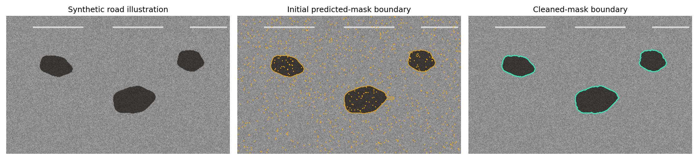
Fig. 322 عکس چپ بازسازی مصنوعیِ بصری از سطح جاده است، نه عکس واقعی پهپاد. در وسط، مرز ماسک پرنویز نمایش داده شده و در راست مرز پاکسازیشده قرار دارد. هدف، مشاهدهٔ معنای هندسی تغییرهاست.#
9.9.3 اجرای الگوریتم گامبهگام#
گام اول — ساخت ماسک دودویی. یک ماتریس از صفر/یک داریم که ۱ به معنای ناحیهٔ خرابیِ هدف است. اگر ورودی یک نقشهٔ احتمال باشد، در مرحلهٔ پیش از مورفولوژی با آستانهٔ مشخص آن را دودویی میکنیم؛ در این مثال، ماسک از پیش آماده و مصنوعی است.
گام دوم — فرسایش با دیسک کوچک. دیسکِ شعاع ۲ پیکسل را در هر نقطه امتحان میکنیم. نقاط سفید منفرد و بسیاری از زائدههای باریک حذف میشوند؛ نواحی پهن کمی منقبض میشوند. این اولین نیمهٔ Opening است.
گام سوم — اتساع همان نتیجه با همان دیسک. نواحی معتبرِ باقیمانده دوباره رشد میکنند. دو مرحلهٔ قبل با هم گشودن را ساختهاند: \(A_1=A\circ B_2\). لکههای سفید بیارتباط کوچک که در فرسایش محو شدند برنمیگردند.
گام چهارم — اتساع با دیسکِ شعاع ۳. این بار با هدف اصلاح سوراخهای کوچک، نواحی سفید را گسترش میدهیم. بخش زیادی از صفرهای منفرد درون نواحی پهن پوشانده میشوند. این نیمهٔ نخست Closing است.
گام پنجم — فرسایش با همان دیسکِ شعاع ۳. گسترش بیرونی را تا حد زیادی پس میگیریم و ماسک نهایی \(A_2=A_1\bullet B_3\) را میسازیم. باید توجه کنیم که اگر دو ناحیهٔ مجزا نزدیک هم بودند، شاید همین مرحله آنها را ناخواسته به یک جسم تبدیل کرده باشد؛ بنابراین به شکل نهایی نگاه میکنیم، نه فقط عدد مساحت.
گام ششم — ساخت دو حد داخلی و بیرونی برای بازبینی مرز. با یک عنصر کوچک دیگر، یک بار ماسک تمیز را فرسایش و یک بار اتساع میدهیم:
تفاضل مجموعهای آن دو را برای نمایش نواری اطراف مرز میگیریم:
این تفاضل عمل پنجم مورفولوژیک نیست؛ صرفاً یک عملیات معمول مجموعهای روی نتایج فرسایش و اتساع است. نوار حاصل «عدم قطعیت آماری» نیست؛ بلکه یک نوار هندسی با عرضی وابسته به \(B_2\) است. کاربرد آن مشخصکردن محدودهای است که بازبین میتواند مرز خرابی را در آن کنترل کند.

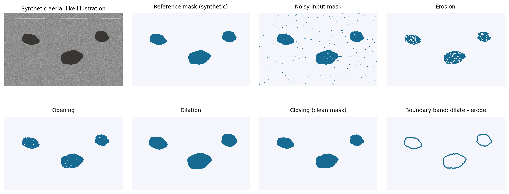
Fig. 323 هشت گام تصویری از دادهٔ مصنوعی: تصویر شبههوایی، ماسک مرجع، ماسک پرنویز، فرسایش، گشودن، اتساع، بستن و نوار مرزی. هر مرحله فقط به چهار عملِ مجاز یا ترکیب مجموعهای ساده وابسته است.#

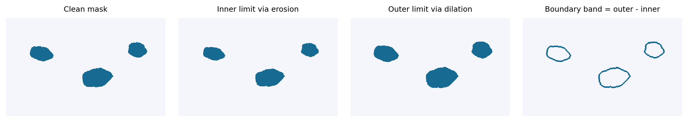
Fig. 324 نمای مستقل از محدودهٔ داخلی و بیرونی و تفاوت آنها. نوارِ بین دو حد، محل مناسبتری برای بازبینی خطای مرز است تا نقاط کاملاً داخلی شیء.#
9.9.4 معادلهٔ خلاصهٔ زنجیره#
با \(B_2\) و \(B_3\) بهعنوان دو دیسک متقارن و با شعاعهای ۲ و ۳ پیکسل داریم:
این رابطه پنج خط برنامه را به یک فرمول معنیدار تبدیل میکند: «ابتدا نقاط سفید اضافی را بزدای؛ سپس حفرههای سیاه کوچک را اصلاح کن.» دلیل مناسببودن آن در این مسئله، نسبت مقیاس نویز و لکههای نسبتاً پهن است، نه برتری عمومی این ترتیب برای همهٔ تصاویر.
9.9.5 سنجش نتیجه: یک مثال عددی بازتولیدپذیر#
اگر \(P\) ماسک پیشبینی و \(G\) ماسک حقیقت مرجع باشد، معیار اشتراک به اجتماع چنین است:
این معیار ابزار ارزیابی است، نه عمل مورفولوژی. در آزمایش مصنوعیِ پیوست با بذر تصادفی مشخص، اجرای کد عددهای زیر را تولید کرده است:
وضعیت ماسک |
IoU نسبت به حقیقت مصنوعی |
|---|---|
ماسک اولیهٔ پرنویز |
0.8703 |
پس از Opening با شعاع ۲ و Closing با شعاع ۳ |
0.9900 |
این دو عدد فقط دربارهٔ همین تصویر مصنوعی معتبرند و تعمیم به عکس واقعی یا مدل یادگیری ماشین ندارند. دانشجو باید با تغییر seed، نوع لکهها، ابعاد و شعاعها بررسی کند آیا این بهبود پایدار میماند یا نه. با تغییر کوچک در شکل هدف (مثلاً از لکهٔ پهن به ترک باریک)، ممکن است نتیجه برعکس شود.

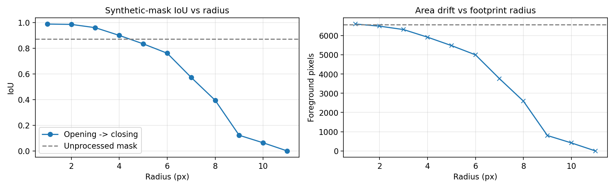
Fig. 325 تغییر IoU و مساحت خروجی با شعاع عنصر ساختاری روی مسئلهٔ مصنوعی این فصل. بهترین شعاع از یک رابطهٔ نظریِ ثابت بهدست نمیآید؛ باید آن را روی نمونههای نماینده بررسی کرد.#
9.9.6 شکست مهم: وقتی آنچه «نویز» میبینیم، ترک واقعی است#
تصور کنید ماسک واقعی، ترک باریکِ آسفالت با پهنای ۲ یا ۳ پیکسل را نشان میدهد. اگر دیسک شعاع ۳ را برای گشودن انتخاب کنیم، دیسک ممکن است در هیچ قسمت از ترک کاملاً جا نشود؛ پس تمام ترک در فرسایش محو میشود. اتساع بعدی دیگر چیزی برای بازگرداندن ندارد. بنابراین میتوان با اجرای الگوریتم کاملاً درست، اطلاعات واقعی و مهم را از دست داد.

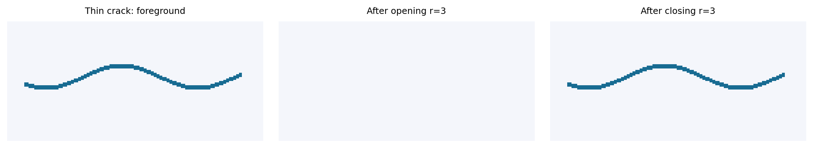
Fig. 326 مثال نقضِ آموزشی: ترک ظریفِ مصنوعی ممکن است در گشودن با دیسک بیشازحد بزرگ ناپدید شود. این شکل، دلیل هندسی هشدار پژوهش جدید دربارهٔ قطعهبندی ترکها را روشن میکند.#
در مطالعهٔ واقعی منتشرشده در سال ۲۰۲۶، پژوهشگران نیز گزارش کردند که عملیات مورفولوژیک روی بعضی ماسکهای ترک، شاخصهای دقت را نسبت به ماسک خام کاهش داده است. این یافتهٔ همان مقاله است، نه نتیجهٔ آزمایش مصنوعی ما. برای موضوعی با عارضههای باریک، راهحل درست ممکن است کوچکترکردن عنصر، انتخاب قالب جهتدار یا حتی حذف مورفولوژی از زنجیره باشد؛ این تصمیم باید با دادهٔ اعتبارسنجی اتخاذ شود. López و همکاران، ۲۰۲۶.
9.9.7 کد کامل کاربردی و اجرای آن#
فایل downloads/chapter09_examples.py بدون نیاز به تصویر اینترنتی نمونه را میسازد و همهٔ مراحل را ذخیره میکند. مسیر اجرای معمول پس از خارجکردن فایل از بستهٔ آموزشی:
python chapter09_examples.py --output outputs_ch09
این یک فایل Python آموزشی است و هیچ ارتباطی با برنامهٔ One-Click سایت ندارد. فایل downloads/chapter09_examples.ipynb همان ایده را در Notebook قابل اجرا ارائه میکند. تمام ورودیها مصنوعی و همراه بستهاند؛ نتیجهٔ اجرا با Seed ثابت قابل بازتولید است.
پرسش عملی: اگر در خروجی نهایی، دو لکهٔ خرابی که واقعاً جدا هستند به هم متصل شدند، کدام مرحله را ابتدا بررسی میکنید؟ پاسخ کوتاه: دیسکِ Closing احتمالاً نسبت به فاصلهٔ دو لکه بزرگ بوده است؛ شعاع آن و ترتیب مراحل را مقایسه کنید. اگر یک لکهٔ کوچک واقعی حذف شد، شعاع Opening یا نسبت اندازهٔ آن لکه به قالب را بازبینی کنید.
9.10 — کارگاه تصمیمگیری: کدام عمل، برای کدام مسئله؟#
مسئلهٔ قابل مشاهده |
انتخاب اولیه |
دلیل |
خطر/کنترل لازم |
|---|---|---|---|
نقطهٔ سفید بسیار کوچک در پسزمینه |
Opening |
در مرحلهٔ فرسایش حذف و دیگر بازیابی نمیشود |
حذف شیء معتبر کوچک |
حفرهٔ سیاه کوچک داخل یک جسم سفید |
Closing |
اتساع حفره را کم میکند و فرسایش اندازه را پس میگیرد |
حذف حفرهٔ واقعی |
زائدهٔ سفید باریک متصل به جسم |
Erosion یا Opening |
قالب در زائده جا نمیشود |
حذف ساختار باریکِ معتبر |
گسستگی خیلی کوچک بین دو بخش یک جسم |
Dilation یا Closing |
تماس و اتصال را ممکن میکند |
ادغام دو شیء مستقل |
تعیین هستهٔ داخلی جسم برای تحلیل مطمئنتر |
Erosion |
فاصله گرفتن از مرز |
کوچکنمایی مساحت |
ایجاد پوشش بیرونی محافظهکارانه دور جسم |
Dilation |
گسترش ناحیه |
بزرگنمایی مساحت |
نویز سفید و حفرهٔ سیاه در یک ماسک |
Opening سپس Closing |
دو نقص با دو ترکیب مکمل رفع میشوند |
ممکن است ترتیب معکوس بهتر باشد |
ترک باریک و پرپیچوخم |
لزوماً هیچکدام |
مورفولوژی میتواند ترک را حذف کند |
ارزیابی IoU/Recall ضروری است |
9.10.1 سه سؤال راهبردی برای انتخاب پارامتر#
۱. شیء واقعی چند پیکسل پهنا دارد؟ پیش از اعمال دیسکِ شعاع ۳ روی ترکِ ۲پیکسلی، باید انتظار نابودی ترک را داشته باشیم. ۲. خطا از چه نوع است؟ لکهٔ سفیدِ اضافه با گشودن و حفرهٔ سیاهِ کاذب با بستن تفاوت دارد. ۳. ارزش کدام خطا بیشتر است؟ در کاربردی که از دسترفتن ترک باریک بسیار پرهزینه است، شاید حفظ نویز اضافه از حذف ترک واقعی بهتر باشد. این قضاوت از مسئله و داده میآید، نه از زیبایی بصری خروجی.
9.10.2 مثال مقایسهٔ اولویت دو عمل#
حالت الف: یک صفحهٔ دارای ذرات سفید پراکنده روی زمینهٔ سیاه داریم. Opening را ابتدا انجام میدهیم، زیرا ذراتی که کوچکتر از قالباند پاک میشوند. حالت ب: دو تکهٔ یک شیء بهوسیلهٔ شکافی باریک از هم جدا شدهاند و میخواهیم اتصال برگردد. Closing را امتحان میکنیم، زیرا اتساع اولیه فاصلهٔ کوتاه را پُر میکند. اینکه این اتصال درست یا غلط است، فقط از خود تصویر و تعریف شیء معلوم میشود.
9.10.3 آموزش پژوهشمحور: ادعای «بهبود» باید قابل سنجش باشد#
در گزارش علمی، عبارت «تصویر پس از مورفولوژی بهتر شد» بهتنهایی کافی نیست. باید مشخص کنیم چه چیزی بهتر شده: تعداد نقاط اشتباه، مساحت ناحیه، جدایی دو جسم، دقت IoU، یا قابلیت مشاهدهٔ انسان؟ همچنین باید پارامترهای قالب، سیاست مرز، ترتیب عملیات، نوع ماسک و تصویر مرجع ذکر شوند. کد پیوست همهٔ این بخشها را در یک آزمایش مصنوعی شفاف نشان میدهد.
9.11 — مرور مفهومی و مسئلههای پیشنهادی#
پرسشهای مفهومی با پاسخ کوتاه#
پرسش ۱. تفاوت فرسایش با کمکردن یک مقدار ثابت از شدت تصویر چیست؟
پاسخ: فرسایش دودویی، عضویت پیکسل در مجموعه را با جا شدن عنصر ساختاری میسنجد؛ کمکردن شدت، مقدار عددی یک پیکسل را عوض میکند و اطلاعات هندسیِ همسایگی را به این صورت بررسی نمیکند.
پرسش ۲. چرا فرسایش مرحلهٔ اول گشودن است؟
پاسخ: ابتدا بخشهای نازک و نقاطی که قالب در آنها جا نمیشود حذف میشوند؛ اتساع بعدی بخشهای ضخیم باقیمانده را گسترش میدهد.
پرسش ۳. چرا نمیتوان Closing را «همان Dilation» نامید؟
پاسخ: بستن شامل اتساع و سپس فرسایش است و هدف آن ترمیم ساختارهای کوچک تیره با بازگرداندن نسبی مرز بیرونی است؛ اتساع تنها تقریباً همهٔ بخشهای سفید را ضخیمتر میکند.
پرسش ۴. چرا دو بار گشودن با همان \(B\) خروجی را تغییر نمیدهد؟
پاسخ: چون ویژگیهای هندسی حذفپذیر با همان قالب قبلاً حذف شدهاند؛ عمل ایدمپوتنت است.
پرسش ۵. اگر شیء در تصویر سیاه و زمینه سفید باشد چه میشود؟
پاسخ: قرارداد پیشزمینه عوض میشود و نقش حذف/پرکردن ساختارها به صورت شهودی جابهجا خواهد شد. باید ابتدا ماسک را بهشکلی بسازیم که شیء هدف «یک» باشد.
پرسش ۶. چرا در تصویرهای پزشکی و بازرسی مهندسی، استفادهٔ خودکار از Opening ممکن است خطا باشد؟
پاسخ: چون ساختار باریک ممکن است اطلاعات بسیار مهم را حمل کند و توسط عنصر ساختاری بزرگ از بین برود.
پرسش ۷. آیا نوار حاصل از \(A_{\rm outer}\setminus A_{\rm inner}\) یک سنجهٔ آماری عدمقطعیت است؟
پاسخ: خیر. فقط نوار هندسیِ حاصل از انبساط و انقباض یک ماسک است و بهتنهایی توزیع احتمال خطای مدل را بیان نمیکند.
تمرینهای تحلیلی و اجرایی#
۱. یک تصویر \(7\times7\) با مربع سفید \(5\times5\) در وسط بسازید. عنصر ساختاری صلیبی \(3\times3\) را روی آن حرکت دهید و خروجی ۴ عمل را دستی حساب کنید. سپس جواب را با Python مقایسه کنید.
۲. یک مربع \(3\times3\) را در گوشهٔ تصویر قرار دهید. تفاوت اجرای فرسایش، اتساع و Closing با border_value=0 و روش حاشیهگذاریِ کافی را توضیح دهید. کدام قرارداد با فرض فیزیکی مسئلهٔ شما تناسب بیشتری دارد؟
۳. فرمول دوگانگی فرسایش و اتساع را برای یک عنصر مرکزیمتقارن از روی تعریف مجموعهای اثبات کنید. سپس آن را برای یک ماسک کوچک و نقطههایی دور از مرز آزمایش کنید.
۴. با دیسکهای شعاع ۱ تا ۱۰، نمودار مساحت \(|A\circ B_r|\) و \(|A\bullet B_r|\) را رسم کنید. کدام تغییرها نتیجهٔ مستقیم گستردهترشدن قالباند؟ چرا اندازهٔ نهایی بهتنهایی معیار دقت نیست؟
۵. در مثال جاده، ترتیب Opening و Closing را معکوس کنید و IoU را اندازه بگیرید. آیا این تغییر همیشه بهتر/بدتر است؟ دلیل هندسی خود را بنویسید.
۶. تصویر باریکِ شکل fig-ch09-thin-crack را با یک عنصر خطی همسو با ترک یا دیسک شعاع کوچکتر پردازش کنید. مشخص کنید کدام حالت جزئیات را بهتر حفظ میکند و چرا.
۷. روی ماسک مصنوعی، تعداد پیکسلهای حذفشده در Opening و اضافهشده در Closing را ثبت کنید. آنها را بهصورت درصدی از اندازهٔ ماسک اولیه بنویسید؛ تفاوت این اعداد را با معیار IoU توضیح دهید.
۸. یک نمونه طراحی کنید که \( (A\circ B)\bullet B \neq (A\bullet B)\circ B \) باشد. بهجای اکتفا به نتیجهٔ کد، نشان دهید کدام پیکسلها باعث اختلاف میشوند.
جمعبندی فصل#
تمام محتوای این فصل بر یک ایده بنا شد: «شکل کوچک را روی مجموعهٔ پیکسلهای هدف امتحان کن.» اگر قالب باید کاملاً جا شود، فرسایش داریم؛ اگر تماسِ جزئی کافی باشد، اتساع داریم. از فرسایش و اتساعِ ترتیبی گشودن و بستن ساخته میشود. گشودن بیشتر برای حذف ساختارهای کوچک سفید و بستن برای ترمیم شکافها یا حفرههای کوچک تیره مناسب است. قوانین دوگانگی، شمول و ایدمپوتنت بودن درک ما را از عملها دقیق میکنند؛ ولی انتخاب نهایی پارامترها به اندازهٔ ویژگی واقعی، هدف پردازش و دادهٔ معتبر وابسته است. نمونهٔ کاربردی جاده نشان داد که حتی یک زنجیرهٔ بسیار ساده میتواند برای خرابیهای پهن مفید باشد، و در عین حال همان زنجیره ممکن است ترکهای ظریف را حذف کند.
دریافت فایلهای همراه و کد قابل اجرا#
منابع و مرزبندی علمی#
۱. Gonzalez, R. C. & Woods, R. E. Digital Image Processing, 4th edition، Chapter 9، بهویژه 9.1 تا 9.3 و نمونهٔ فیلترگذاری مورفولوژیک. مبنای مفهومی تعریف مجموعهها، عنصر ساختاری، چهار عمل و خواص ریاضی این فصل است. تصاویر کتاب کپی نشده و همهٔ شکلهای بسته اصیلاند.
۲. scikit-image developers. Morphological Filtering — official worked example و morphology API — stable documentation. مرجع قابل دسترس و معتبر برای توصیف رفتار الگوریتمها و راهنمای پیادهسازی در Python.
۳. López, P., Zubasti, P., García, J., & Molina, J. M. (2026). A UAV-Based Framework for Visual Detection and Geospatial Mapping of Real Road Surface Defects. Drones, 10(2), 119. مرجع کاربرد معاصر و هشدار تجربی دربارهٔ کاهش دقتِ ماسک ترکهای باریک بر اثر برخی پردازشهای مورفولوژیک؛ نتایج عددیِ ماسک مصنوعیِ ما به این مقاله نسبت داده نمیشوند.
محدودیت آگاهانهٔ این نسخه: اگرچه فصل نهم کتاب مباحث دیگری هم دارد، در این جزوه تنها چهار عمل دودوییِ خواستهشده آموزش و کدنویسی شدهاند. به همین دلیل هیچ عملیات مورفولوژیک پنجمی بهعنوان درس یا الگوریتم مستقل وارد نشده است.